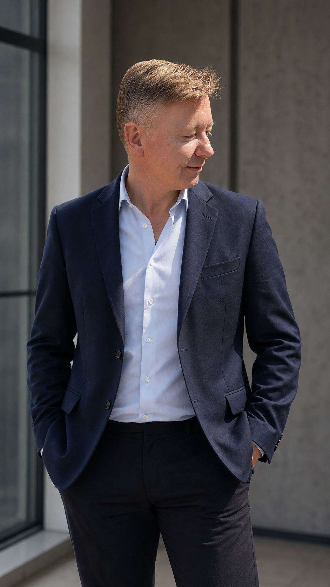

01
Developing people and leaders
Build leadership capability through coaching, trust and meaningful responsibility. Help emerging people managers develop their judgement and confidence, so they can support their teams and take ownership of delivery.
Software Engineering Manager · Engineering Leadership
I develop people and engineering leaders, set direction for customer-facing products, and build the trust and accountability teams need to deliver with confidence.
Based in the UK · Open to remote and hybrid opportunities

About
I’m a Software Engineering Manager with a background in software and data engineering, architecture and analytics. Earlier work across utilities, financial services and the charity sector gives me a broader understanding of customer operations, commercial priorities and how organisations make decisions.
At Flutter Entertainment, I lead engineering delivery for customer-facing Free-to-Play products across multiple brands. I set direction and align priorities across engineering, product and delivery, while developing senior engineers with their own people-management responsibilities. My focus is on building leaders who can own their teams and delivery, supported by clear expectations, trust and accountability.
I build trust, psychological safety and clear accountability. I stay close enough to the technology to understand trade-offs and challenge decisions, while supporting engineers to own the implementation. My aim is to help teams deliver today and become more capable and self-sufficient over time.
Selected impact
01
Build leadership capability through coaching, trust and meaningful responsibility. Help emerging people managers develop their judgement and confidence, so they can support their teams and take ownership of delivery.
02
Bring clarity when priorities, ownership or technology are changing. Set direction, make dependencies and trade-offs visible, and help teams move forward with a shared understanding of what matters.
03
Connect engineering priorities with customer needs and business commitments. Create the conditions for teams to deliver confidently, with quality, resilience and operational readiness considered throughout.
04
Work across engineering, product, delivery, architecture and wider business areas to resolve shared challenges and align priorities. Bring people together around decisions that improve delivery and build capability beyond the immediate team.
05
Encourage engineers to explore where AI can make a useful difference, connect complementary ideas and help successful approaches reach other teams. Build confidence in adoption while keeping human judgement and accountability central.
06
Provide calm coordination when services are disrupted. Bring the right people together, establish clear priorities and maintain focus on restoring service, while supporting learning and improvements afterwards.
I lead by creating the conditions for others to thrive; building trust, removing obstacles and developing the capability of my team so they can solve problems, make decisions and deliver outcomes with confidence.
Make direction, expectations and priorities understandable.
Give people genuine ownership, supported by psychological safety.
Coach through questions, feedback and meaningful stretch opportunities.
Own outcomes, speak honestly and learn without blame.
Career
2020—Present
Engineering Manager since June 2023, following roles as Lead Software Engineer and Data Engineer. Lead delivery across multiple brands and develop senior engineers with their own people-management responsibilities.
2019—2020
Data Warehouse Architect, leading the architecture and continued development of data-warehouse capabilities.
2015—2019
MI Data Analyst, translating organisational needs into reporting, analysis and technical delivery.
2003—2015
Progressive customer, data and leadership roles spanning MI, business partnering and credit risk, including offshore partner delivery through a Genpact tower lead and their team in Hyderabad and Bangalore.
Professional development
Affiliateship of the City and Guilds of London Institute (AfCGI) — 2025
ILM Level 5 Award in Leadership and Management — 2025
ILM Level 3 Leadership and Management — 2023
Beyond the job title
Integrity, accountability, resilience, optimism and relationships are the values I return to - especially when the work is uncertain or the decisions are difficult! I believe good leadership is serious about outcomes without losing sight of the people delivering them.
Connect